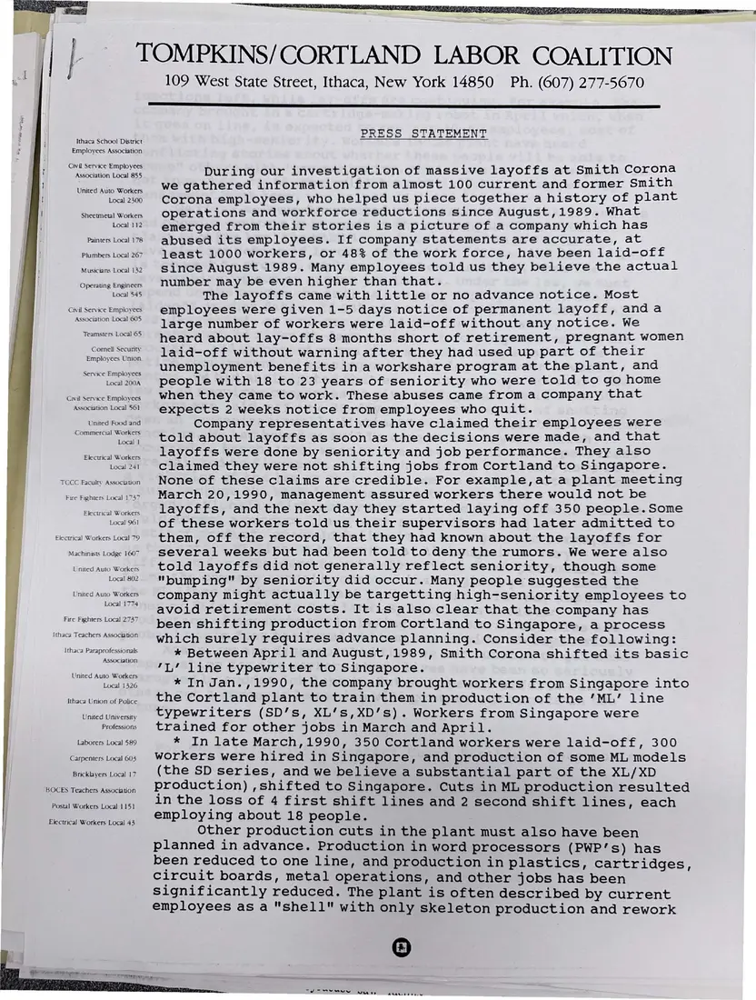
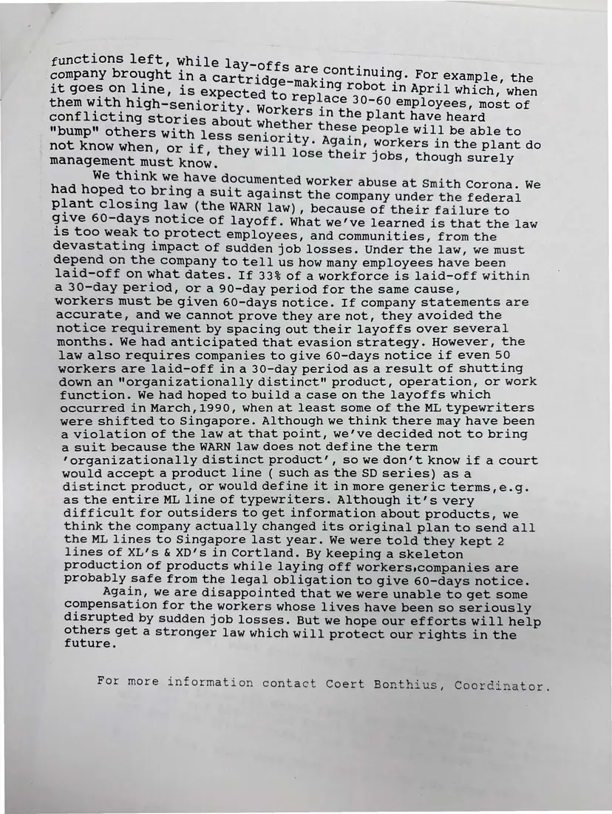

Press release, 2 pages
Coalition press statement on its Smith Corona investigation
[1991]Date inferred
The coalition summarizes what its investigation found about layoffs and shifts in production from Cortland to Singapore since 1989, and why it could not bring a suit under the WARN Act.
Download or cite this itemPages


(open zoom view)Read the page text (machine-read, mostly readable)
This text was generated automatically from the photograph and has not been corrected. The image is the authoritative record.
Ithaca Schoo! District Employees Association Civil Service Employees Association Local 855 United Auto Workers Local 2300 Sheetmetal Workers Local 112 Painters Local 178 Plumbers Local 267 Musicians Local 132 Operating Engineers Local 545 Civil Service Employees Association Local 605 Teamsters Local 65 Comell Security Employees Union Service Employees Local 200A Civil Service Employees Association Local 561 United Food and Commercial Workers Local 1 Electrical Workers Local 241 TCCC Faculty Assocauon Fire Fighters Local 1737 Electrical Workers Local 961 £lectrical Workers Local 79 Machinists Lodge 160 United Auto Workers Local 802 United Auto Workers Local 1774 Fire Fighters Local 2737 Ithaca Teachers Association Ithaca Paraprofessionals Association United Auto Workers Local 1326 Ithaca Union of Police United University Professions Laborers Local 589 Carpenters Local 603 Bricklayers Local 17 BOCES Teachers Association Postal Workers Local 1151 Electrical Workers Local 43 TOMPKINS/CORTLAND LABOR COALITION 109 West State Street, Ithaca, New York 14850 Ph. (607) 277-5670 PRESS STATEMENT During our investigation of massive layoffs at Smith Corona we gathered information from almost 100 current and former Smith Corona employees, who helped us piece together a history of plant operations and workforce reductions since August,1989. What emerged from their stories is a picture of a company which has abused its employees. If company statements are accurate, at least 1000 workers, or 48% of the work force, have been laid-off since August 1989. Many employees told us they believe the actual number may be even higher than that. The layoffs came with little or no advance notice. Most employees were given 1-5 days notice of permanent layoff, anda large number of workers were laid-off without any notice. We heard about lay-offs 8 months short of retirement, pregnant women laid-off without warning after they had used up part of their unemployment benefits ina workshare program at the plant, and people with 18 to 23 years of seniority who were told to go home when they came to work. These abuses came from a company that expects 2 weeks notice from employees who quit. Company representatives have claimed their employees were told about layoffs as soon as the decisions were made, and that layoffs were done by seniority and job performance. They also claimed they were not shifting jobs from Cortland to Singapore. None of these claims are credible. For example,at a plant meeting March 20,1990, management assured workers there would not be layoffs, and the next day they started laying off 350 people.Some of these workers told us their supervisors had later admitted to them, off the record, that they had known about the layoffs for several weeks but had been told to deny the rumors. We were also told layoffs did not generally reflect seniority, though some "bumping" by seniority did occur. Many people suggested the company might actually be targetting high-seniority employees to avoid retirement costs. It is also clear that the company has been shifting production from Cortland to Singapore, a process which surely requires advance planning. Consider the following: * Between April and August,1989, Smith Corona shifted its basic 'L’ line typewriter to Singapore. * In Jan.,1990, the company brought workers from Singapore into the Cortland plant to train them in production of the ’ML’ line typewriters (SD’s, XL’s,XD’s) . Workers from Singapore were trained for other jobs in March and April. * In late March,1990, 350 Cortland workers were laid-off, 300 workers were hired in Singapore, and production of some ML models (the SD series, and we believe a substantial part of the XL/XD production) , Shifted to Singapore. Cuts in ML production resulted in the loss of 4 first shift lines and 2 second shift lines, each employing about 18 people. Other production cuts in the plant must also have been planned in advance. Production in word processors (PWP’s) has been reduced to one line, and production in plastics, cartridges, circuit boards, metal operations, and other jobs has been significantly reduced. The plant is often described by current employees as a "shell" with only skeleton production and rework ASRS TO a ages eee


(open zoom view)Read the page text (machine-read, mostly readable)
This text was generated automatically from the photograph and has not been corrected. The image is the authoritative record.
functions left, while lav- company brought ina cartr it goes on line Offs are conti idg ij : ample, the Lys A i not know when, or dig they will see Chaly fold thalchiei oe ee management must know. We think we have documented worker abuse at Smith Corona. We had hoped to bring a suit against the company under the federal plant closing law (the WARN law), because of their failure to give 60-days notice of 1 ayoff. What we’ve learned is that the law is too weak to protect employees, and communities, from the devastating impact of sudden job losses. Under the law, we must depend on the company to tell us how many employees have been laid-off on what dates. If 33% of a workforce is laid-off within a 30-day period, or a 90-day period for the same cause, workers must be given 60-days notice. If company statements are accurate, and we cannot prove they are not, they avoided the notice requirement by spacing out their layoffs over several months. We had anticipated that evasion strategy. However, the law also requires companies to give 60-days notice if even 50 workers are laid-off ina 30-day period as a result of shutting down an "organizationally distinct" product, operation, or work function. We had hoped to build a case on the layoffs which occurred in March,1990, when at least some of the ML typewriters were shifted to Singapore. Although we think there may have been a violation of the law at that point, we’ve decided not to bring a suit because the WARN law does not define the term ‘organizationally distinct product’, so we don’t know if a court would accept a product line ( such as the SD series) asa distinct product, or would define it in more generic terms,e.g. as the entire ML line of typewriters. Although it’s very difficult for outsiders to get information about products, we think the company actually changed its original plan to send all the ML lines to Singapore last year. We were told they kept 2 lines of XL’s & XD’s in Cortland. By keeping a skeleton production of products while laying off workers companies are probably safe from the legal obligation to give 60-days notice. Again, we are disappointed that we were unable to get some compensation for the workers whose lives have been so seriously disrupted by sudden job losses. But we hope our efforts will help panere get a stronger law which will protect our rights in the uture. For more information contact Coert Bonthius, Coordinator.
See something wrong, or recognize a person or event? Send a correction. If you hold rights in this item or think it should not be public, write to the same address.